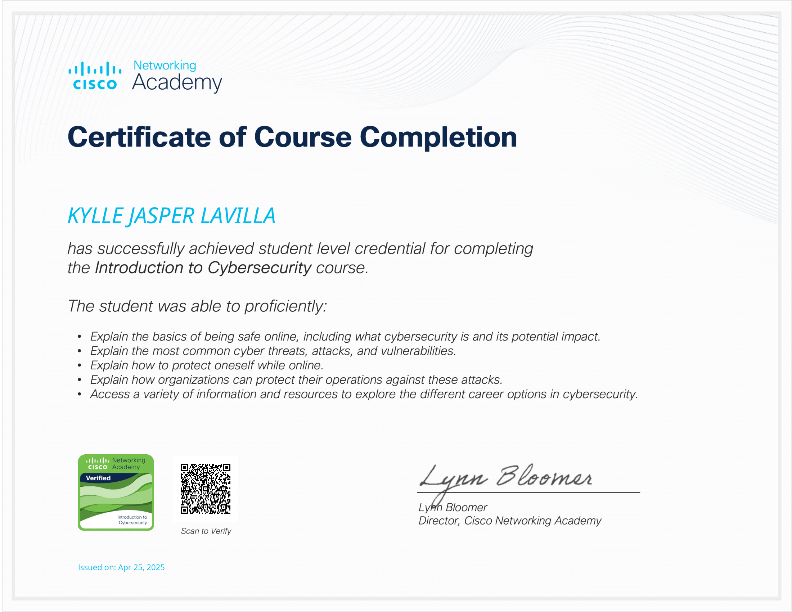
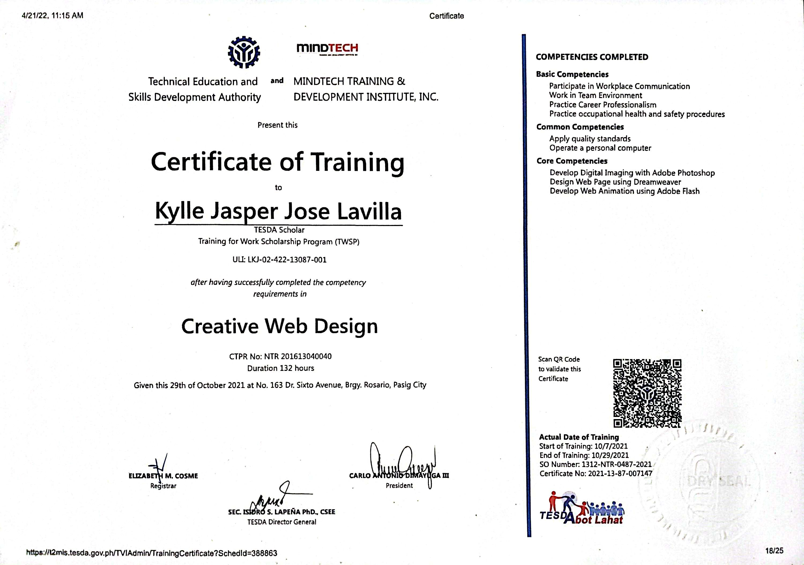
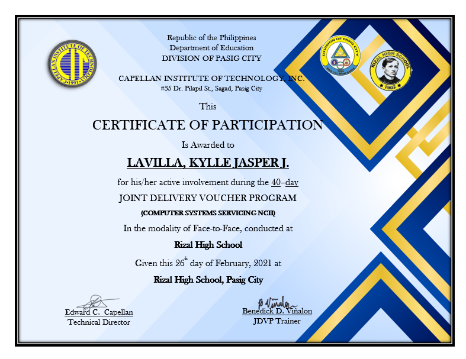

Hello, I'm Kylle.
Data Center Operator at SMC - Bank of Commerse.
Data Center Operator at SMC - Bank of Commerse.
Motivated IT Data Center Operator at San Miguel Corporation – Bank of Commerce, experienced in server and network equipment configuration, system monitoring, and preventive maintenance. Skilled in managing and maintaining data center infrastructure to ensure high availability and optimal performance. Proficient in monitoring network operations, troubleshooting hardware and software issues, and conducting routine system checks to prevent downtime. Experienced in cable management, rack installations, and equipment documentation. Dedicated to implementing secure, reliable, and scalable solutions that support business continuity and operational efficiency.

Issued by: CISCO & DICT - ITU DTC
This certification covers fundamental networking concepts including IP addressing, subnetting, and basic troubleshooting skills essential for maintaining and diagnosing network issues.
Completed: May 2025
Issued by: CISCO & DICT - ITU DTC
This certification covers the essentials of cybersecurity including cyber threats, security principles, technologies, and the fundamentals of protecting data and networks in today's digital world.
Completed: April 2025
Issued by: TESDA & MINDTECH Institute
This certification covers the fundamentals of creative web design including layout principles, color theory, typography, responsive design, and hands-on experience with HTML, CSS, and Adobe Photoshop.
Completed: October 2021
Issued by: TESDA & Capellan Institute of Technology
This certification covers the installation, configuration, maintenance, and repair of computer systems and networks, including hardware diagnostics, software troubleshooting, and basic networking based on TESDA's NCII standards.
Completed: February 2021Bachelor of Science in Information Technology
Graduated: 2025 (Cum Laude)
Specialized in systems development, database management, and networking. Completed real-world projects and a capstone thesis focused on predicting the timely graduation of BSIT students using logistic regression analysis to support data-driven academic planning.
TVL - Information and Communications Technology
Graduated: 2021 (With High Honors)
Focused on developing strong technical IT skills, including computer literacy, hardware and software servicing, and troubleshooting. Successfully passed the Computer Systems Servicing NCII certification, demonstrating proficiency in maintaining and supporting computer systems.
PLP Campus Lions Club
Led organization-wide projects, managed events, and facilitated peer training initiatives focused on tech upskilling.
PLP Golden Z Club
Coordinated academic seminars, mentored members, and strengthened collaboration with local tech communities.
For inquiries or technical consultations, please feel free to reach out at any time. You may use the contact form or connect directly, and I will be glad to assist in exploring effective solutions together.